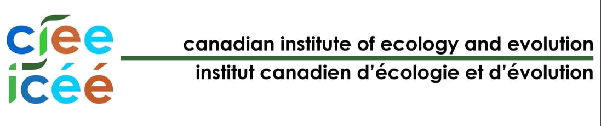
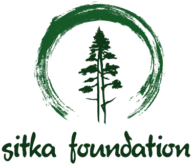
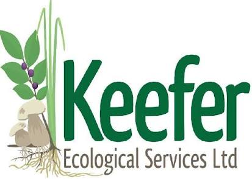

Draw an area with the shape tool at the top left of the map, double-clicking to finish—or click a grid cell. The plants you selected will be listed in the checklist bottom right. Download the formatted checklist to aid your searches.
W̱SÁNEĆ and Lək̓ʷəŋən Peoples have cared for these lands and waters since time immemorial.
The memory preserved here is much more limited: collected specimens, names written down on lists, and observations shared through iNaturalist, reaching back to 1859.
Each record is a moment when someone stopped to take note of a plant.
Some plants have long been recorded, while others have appeared only in more recent years. Still others have gone unseen for decades, quietly disappearing from the record.
This gallery shows native species once reported for the Saanich Peninsula, which have not been seen in recent decades. Some may be lost to us—overlooked, forgotten, or waiting to be rediscovered. Others may be lost because of us, through impacts like habitat change or the introduction of invasive species.
Select a plant from the gallery to read its curatorial notes, then explore its distribution on the Atlas, or add curatorial notes in Living Data. Then join local naturalists and community members on a search for the “Lost” Plants of the Saanich Peninsula project on iNaturalist.
These native species were reported for the peninsula in the past, and have been seen again since 2000. They represent the enduring core of its native flora—though being found again is no promise of security, and some plants are known to occur in only one or two places.
Select a plant from the gallery to read its curatorial notes, then explore its distribution on the Atlas, or add curatorial notes in Living Data.
These native species were first reported for the Saanich Peninsula since 2000. Some were surely here all along, overlooked by earlier botanists or confused with their relatives; others may be new arrivals or newly recognized taxonomically.
Select a plant from the gallery to read its curatorial notes, then explore its distribution on the Atlas, or add curatorial notes in Living Data.
Not every plant reported for the peninsula is an accepted part of its flora. Some plants have been excluded for various reasons: curators have judged some to be doubtful records, others to be garden escapes that persist without establishing, or to have been planted.
Select a plant from the gallery to read curatorial notes.
These taxa are under review, and are not yet on the checklist. Plants are evaluated and prioritized for review based on the weight of evidence.
Select a plant from the gallery to read curatorial notes.
Szczawinski and Harrison’s (1972) Flora of the Saanich Peninsula provides the historical baseline for this atlas. Harvey Janszen devoted much of his life to revising this flora, but passed away in 2021, before completing this work. A community of naturalists has since carried those efforts forward; this atlas is a testament to that continuing legacy.
To date, 1102 vascular plant species have been recorded on the Saanich Peninsula, drawing together 292392 records from historical collections, iNaturalist observations and other sources. Each species falls into one of three groups:
Click a group to show only the records of those species, old and recent, on the map and in the list. Open Filters to narrow records by recorder, locality or time period, pick a plant from the list to see only its records, or use the shape tool at the top left of the map to draw an area, double-clicking to finish. Open Records below the map for the details behind each selection.
Through the combined efforts of 9434 individuals, the Saanich naturalist community has now documented a total of 1102 vascular plant species. Since 2000, 88 percent of the historically reported plant diversity has been confirmed and 162 new species reports added to the list.
Community members have now documented 85 percent of the total plant diversity known to the region on iNaturalist.
Contribute to this growing record by submitting your observations to the “Lost” plants of the Saanich Peninsula iNaturalist project.
Here, you can browse photos of some of the most commonly documented plants, as well as recent observations and top observers across the region, based on iNaturalist data. Visualisation code courtesy of Ben Keen.
Every plant in this list is a search waiting to happen. This tool suggests where to begin from the pattern of past sightings alone, applying one component of our protocol for detecting local extinction.
Extirpation probability (EP) runs from 0 (likely still present) to 1 (likely lost locally). Using Solow’s (1993) method, it compares when a species was sighted with the whole period of record, from the earliest collection in our data (1859) to 2026. EP is highest for plants that were recorded repeatedly and then stopped being seen. Plants recorded only once or twice tend to score nearer the middle, since so few records say little either way.
Five steps to a target species:
A high EP is a reason to go looking, not proof of loss. It does not account for where or how hard people have searched, or for suitable habitat, which the full protocol goes on to weigh.
Based on our current knowledge, 81 percent of the 670 native vascular plant species known to the peninsula have been reported within its protected and conserved areas, from national park reserve and ecological reserves to regional parks and lands held by conservancies. The other 128 have so far been recorded only outside them.
128 species · 788 records
128 native species, 19 percent of the native plant diversity known to the peninsula, have so far been reported only outside its protected and conserved areas. The map's grid shows where their records lie - the places where protection does not yet reach this part of the flora, or where it has yet to be looked for within the protected areas.
1 area · 1,296 hectares
The national park reserve holds 29 percent of the native plant diversity known to the peninsula: 194 of its 670 native vascular plant species have been reported within it.
4 areas · 445 hectares
Ecological reserves hold 26 percent of the native plant diversity known to the peninsula: 171 of its 670 native vascular plant species have been reported within them.
4 areas · 1,810 hectares
Provincial parks hold 52 percent of the native plant diversity known to the peninsula: 347 of its 670 native vascular plant species have been reported within them.
3 areas · 2,119 hectares
Migratory bird sanctuaries hold 42 percent of the native plant diversity known to the peninsula: 284 of its 670 native vascular plant species have been reported within them.
16 areas · 2,633 hectares
Regional parks hold 66 percent of the native plant diversity known to the peninsula: 440 of its 670 native vascular plant species have been reported within them.
15 areas · 309 hectares
Private conservation lands hold 30 percent of the native plant diversity known to the peninsula: 200 of its 670 native vascular plant species have been reported within them.
Regional park · 7 hectares
23 native species, 3 percent of the native plant diversity known to the peninsula, have been reported within Albert Head Lagoon Regional Park, the 16th richest of its 16 regional parks.
Private conservation land · The Land Conservancy of BC · 3 hectares
4 native species, 1 percent of the native plant diversity known to the peninsula, have been reported within Alston-Stewart, the 15th richest of its 15 private conservation lands.
Private conservation land · Habitat Acquisition Trust · 2 hectares
8 native species, 1 percent of the native plant diversity known to the peninsula, have been reported within Bear Hill, the 13th richest of its 15 private conservation lands.
Regional park · 49 hectares
98 native species, 15 percent of the native plant diversity known to the peninsula, have been reported within Bear Hill Regional Park, the 9th richest of its 16 regional parks.
Regional park · 4 hectares
44 native species, 7 percent of the native plant diversity known to the peninsula, have been reported within Coles Bay Regional Park, the 13th richest of its 16 regional parks.
Regional park · 14 hectares
84 native species, 13 percent of the native plant diversity known to the peninsula, have been reported within Devonian Regional Park, the 11th richest of its 16 regional parks.
Provincial park · 68 hectares
87 native species, 13 percent of the native plant diversity known to the peninsula, have been reported within Discovery Island Marine Park, the 4th richest of its 4 provincial parks.
Private conservation land · BC Parks Foundation · 14 hectares
24 native species, 4 percent of the native plant diversity known to the peninsula, have been reported within Earthspring, the 8th richest of its 15 private conservation lands.
Regional park · 444 hectares
188 native species, 28 percent of the native plant diversity known to the peninsula, have been reported within Elk/Beaver Lake Regional Park, the 4th richest of its 16 regional parks.
Migratory bird sanctuary · 134 hectares
121 native species, 18 percent of the native plant diversity known to the peninsula, have been reported within Esquimalt Lagoon Migratory Bird Sanctuary, the 2nd richest of its 3 migratory bird sanctuaries.
Regional park · 109 hectares
135 native species, 20 percent of the native plant diversity known to the peninsula, have been reported within Francis/King Regional Park, the 6th richest of its 16 regional parks.
Private conservation land · Habitat Acquisition Trust · 23 hectares
10 native species, 1 percent of the native plant diversity known to the peninsula, have been reported within Ginns, the 12th richest of its 15 private conservation lands.
Provincial park · 293 hectares
250 native species, 37 percent of the native plant diversity known to the peninsula, have been reported within Goldstream Park, the 2nd richest of its 4 provincial parks.
Regional park · 2 hectares
44 native species, 7 percent of the native plant diversity known to the peninsula, have been reported within Gonzales Hill Regional Park, the 13th richest of its 16 regional parks.
Provincial park · 1,276 hectares
274 native species, 41 percent of the native plant diversity known to the peninsula, have been reported within Gowlland Tod Park, the richest of its 4 provincial parks.
National park reserve · 1,296 hectares
194 native species, 29 percent of the native plant diversity known to the peninsula, have been reported within Gulf Islands National Park Reserve of Canada.
Regional park · 37 hectares
108 native species, 16 percent of the native plant diversity known to the peninsula, have been reported within Horth Hill Regional Park, the 7th richest of its 16 regional parks.
Regional park · 53 hectares
101 native species, 15 percent of the native plant diversity known to the peninsula, have been reported within Island View Beach Regional Park, the 8th richest of its 16 regional parks.
Regional park · 31 hectares
93 native species, 14 percent of the native plant diversity known to the peninsula, have been reported within Lone Tree Hill Regional Park, the 10th richest of its 16 regional parks.
Private conservation land · The Land Conservancy of BC · 9 hectares
16 native species, 2 percent of the native plant diversity known to the peninsula, have been reported within Madrona Farm, the 11th richest of its 15 private conservation lands.
Private conservation land · Friends of Maltby Lake Watershed Society · 77 hectares
73 native species, 11 percent of the native plant diversity known to the peninsula, have been reported within Maltby Lake, the 2nd richest of its 15 private conservation lands.
Private conservation land · BC Parks Foundation · 6 hectares
51 native species, 8 percent of the native plant diversity known to the peninsula, have been reported within Mary Hill Connector, the 4th richest of its 15 private conservation lands.
Private conservation land · Habitat Acquisition Trust · 1 hectares
51 native species, 8 percent of the native plant diversity known to the peninsula, have been reported within Matson Conservation Area, the 4th richest of its 15 private conservation lands.
Regional park · 81 hectares
197 native species, 29 percent of the native plant diversity known to the peninsula, have been reported within Mill Hill Regional Park, the 2nd richest of its 16 regional parks.
Private conservation land · The Land Conservancy of BC · 11 hectares
79 native species, 12 percent of the native plant diversity known to the peninsula, have been reported within Millstream Creek Watershed, the richest of its 15 private conservation lands.
Regional park · 44 hectares
28 native species, 4 percent of the native plant diversity known to the peninsula, have been reported within Mount Wells Regional Park, the 15th richest of its 16 regional parks.
Regional park · 755 hectares
195 native species, 29 percent of the native plant diversity known to the peninsula, have been reported within Mount Work Regional Park, the 3rd richest of its 16 regional parks.
Regional park · 20 hectares
66 native species, 10 percent of the native plant diversity known to the peninsula, have been reported within Mountain Road Forest Regional Park, the 12th richest of its 16 regional parks.
Private conservation land · Nature Conservancy of Canada · 60 hectares
68 native species, 10 percent of the native plant diversity known to the peninsula, have been reported within Nature Conservancy of Canada protected area, the 3rd richest of its 15 private conservation lands.
Ecological reserve · 232 hectares
106 native species, 16 percent of the native plant diversity known to the peninsula, have been reported within Oak Bay Islands Ecological Reserve, the 2nd richest of its 4 ecological reserves.
Private conservation land · BC Parks Foundation · 6 hectares
37 native species, 6 percent of the native plant diversity known to the peninsula, have been reported within Rae-Leigh Place, the 6th richest of its 15 private conservation lands.
Private conservation land · The Land Conservancy of BC · 3 hectares
7 native species, 1 percent of the native plant diversity known to the peninsula, have been reported within SISȻENEM (Halibut Island), the 14th richest of its 15 private conservation lands.
Ecological reserve · 190 hectares
4 native species, 1 percent of the native plant diversity known to the peninsula, have been reported within Satellite Channel Ecological Reserve, the 4th richest of its 4 ecological reserves.
Private conservation land · The Land Conservancy of BC · 72 hectares
23 native species, 3 percent of the native plant diversity known to the peninsula, have been reported within Second Lake, the 9th richest of its 15 private conservation lands.
Migratory bird sanctuary · 146 hectares
53 native species, 8 percent of the native plant diversity known to the peninsula, have been reported within Shoal Harbour Migratory Bird Sanctuary, the 3rd richest of its 3 migratory bird sanctuaries.
Private conservation land · The Nature Trust of British Columbia · 2 hectares
37 native species, 6 percent of the native plant diversity known to the peninsula, have been reported within Swan Lake - Christmas Hill, the 6th richest of its 15 private conservation lands.
Ecological reserve · 15 hectares
36 native species, 5 percent of the native plant diversity known to the peninsula, have been reported within Ten Mile Point Ecological Reserve, the 3rd richest of its 4 ecological reserves.
Regional park · 925 hectares
290 native species, 43 percent of the native plant diversity known to the peninsula, have been reported within Thetis Lake Regional Park, the richest of its 16 regional parks.
Ecological reserve · 8 hectares
123 native species, 18 percent of the native plant diversity known to the peninsula, have been reported within Trial Islands Ecological Reserve, the richest of its 4 ecological reserves.
Migratory bird sanctuary · 1,838 hectares
253 native species, 38 percent of the native plant diversity known to the peninsula, have been reported within Victoria Harbour Migratory Bird Sanctuary, the richest of its 3 migratory bird sanctuaries.
Regional park · 59 hectares
151 native species, 23 percent of the native plant diversity known to the peninsula, have been reported within Witty's Lagoon Regional Park, the 5th richest of its 16 regional parks.
Provincial park · 174 hectares
147 native species, 22 percent of the native plant diversity known to the peninsula, have been reported within ȽÁU,WELṈEW̱/John Dean Park, the 3rd richest of its 4 provincial parks.
Private conservation land · W̱SÁNEĆ Lands Trust Society · 19 hectares
18 native species, 3 percent of the native plant diversity known to the peninsula, have been reported within ȾIKEL, the 10th richest of its 15 private conservation lands.
14 published, 8 of them globally significant · 11 proposed · 781 hectares
Key Biodiversity Areas mark the places that matter most for the persistence of species and ecosystems. The peninsula's Garry oak meadows, rocky headlands and islets hold 14 published Key Biodiversity Areas, most of them identified for their threatened plants, and 11 more are proposed. Together the published KBAs hold 55 percent of the native plant diversity known to the peninsula: 371 of its 670 native vascular plant species have been reported within them.
Key Biodiversity Area · Nationally significant for vascular plants · 14 hectares
85 native species, 13 percent of the native plant diversity known to the peninsula, have been reported within Christmas Hill.
Key Biodiversity Area · Nationally significant for amphibians and reptiles, invertebrates · 199 hectares
125 native species, 19 percent of the native plant diversity known to the peninsula, have been reported within Durrance Lake - Cole Hill.
Key Biodiversity Area · Globally significant for vascular plants · 28 hectares
177 native species, 26 percent of the native plant diversity known to the peninsula, have been reported within Fort Rodd Hill.
Key Biodiversity Area · Globally significant for vascular plants · 2 hectares
37 native species, 6 percent of the native plant diversity known to the peninsula, have been reported within Gonzales Point.
Key Biodiversity Area · Globally significant for vascular plants · 2 hectares
92 native species, 14 percent of the native plant diversity known to the peninsula, have been reported within Harling Point.
Key Biodiversity Area · Nationally significant for vascular plants · 3 hectares
64 native species, 10 percent of the native plant diversity known to the peninsula, have been reported within Kohweechela - Mary Tod Island.
Key Biodiversity Area · Nationally significant for nonvascular plants · 27 hectares
35 native species, 5 percent of the native plant diversity known to the peninsula, have been reported within Sidney Island - Wymond Point.
Key Biodiversity Area · Nationally significant for invertebrates, vascular plants · 144 hectares
96 native species, 14 percent of the native plant diversity known to the peninsula, have been reported within SḰŦÁMEN - North Sidney Island.
Key Biodiversity Area · Globally significant for vascular plants · 2 hectares
47 native species, 7 percent of the native plant diversity known to the peninsula, have been reported within Trafalgar Park.
Key Biodiversity Area · Globally significant for vascular plants · 19 hectares
149 native species, 22 percent of the native plant diversity known to the peninsula, have been reported within Trial Islands.
Key Biodiversity Area · Globally significant for invertebrates, vascular plants · 140 hectares
134 native species, 20 percent of the native plant diversity known to the peninsula, have been reported within T̸IX̱EṈ - Cordova Shore.
Key Biodiversity Area · Globally significant for vascular plants · 39 hectares
223 native species, 33 percent of the native plant diversity known to the peninsula, have been reported within Uplands Park - Cattle Point.
Key Biodiversity Area · Nationally significant for vascular plants · 3 hectares
39 native species, 6 percent of the native plant diversity known to the peninsula, have been reported within Witty's Beach.
Key Biodiversity Area · Globally significant for invertebrates, vascular plants · 159 hectares
19 native species, 3 percent of the native plant diversity known to the peninsula, have been reported within ȽEL,TOS - James Island.
This preliminary evaluation is limited by biases in sampling effort and other gaps in the data, but it is a starting point for a more thorough assessment of progress toward conserving the region’s plant diversity. Help improve it by reporting your observations to the “Lost” plants of the Saanich Peninsula iNaturalist project.
The map shows protected and conserved areas by category, with Key Biodiversity Areas outlined in cream. Proposed Key Biodiversity Areas, whose boundaries are not yet public, are marked by rings. Click an area on the map, or in the chart below it, to show only the plants recorded there and its summary above, or a category in the map’s legend or the chart to show those recorded in all its areas. Choose Unprotected native plant diversity in the chart to show, as a grid on the map, where the native plants not yet reported in any protected area have been recorded. Protected areas are from the Canadian Protected and Conserved Areas Database (Environment and Climate Change Canada), and Key Biodiversity Areas from KBA Canada (CC BY-NC-SA 4.0).
We invite you to contribute to a living flora of the W̱SÁNEĆ/Saanich Peninsula! Please help us to improve the accuracy of the data presented here by adding curatorial notes regarding the provenance, taxonomy, or georeferencing of records.
Click on any taxon in the checklist below to add a curatorial note. You can also choose a taxon from any other part of the atlas, through the speech bubble beside its name.
This project is dedicated to the memory of Harvey Janszen (July 11, 1946–May 10, 2021) and other fellow naturalists, including Hans Roemer, who have passed away in recent years. Harvey spent decades getting to know the plants of the Salish Sea—collecting more than 3000 plant specimens, keeping field journals from 1973 to 2017, and compiling species checklists for the southern Gulf Islands, the Saanich Peninsula, and the San Juan Islands. Through this initiative we invite you to help carry this work forward, by sharing your local plant knowledge and contributing to the co-creation of a living Flora of the W̱SÁNEĆ/Saanich Peninsula.
With thanks to our supporters



Displaying 292,392 of 292,392 records for 1,101 taxa
Alismataceae
-Water-Plantain family
Alisma
-water-plantains
Alisma plantago-aquatica
-European Water-plantain
Sagittaria
-Arrowheads
Sagittaria latifolia
-broadleaf arrowhead
Amaranthaceae
-Amaranth family
Amaranthus
-amaranths
Amaranthus albus
-prostrate pigweed
Amaranthus blitoides
-procumbent pigweed
Amaranthus powellii
-powell's amaranth
Amaranthus retroflexus
-Redroot Amaranth
Atriplex
-Saltbushes
Atriplex dioica
-thickleaf orach
Atriplex patula
-Common Orache
Atriplex prostrata
-Creeping Saltbush
Chenopodiastrum
-maple and nettle-leaved goosefoots
Chenopodiastrum murale
-nettle-leaved goosefoot
Chenopodium
-Goosefoots
Chenopodium album
-Common Lambsquarters
Oxybasis
-Goosefoots
Oxybasis rubra humilis
-Marshland Goosefoot
Salicornia
-pickleweeds
Salicornia depressa
-Virginia Glasswort
Salicornia pacifica
-Pacific Glasswort
Amaryllidaceae
-amaryllis, onions, and allies
Allium
-onions
Allium acuminatum
-Hooker's onion
Allium amplectens
-narrowleaf onion
Allium cernuum
-nodding onion
Allium geyeri tenerum
-Bulbil Onion
Allium vineale vineale
Galanthus
-snowdrops
Galanthus elwesii
-greater snowdrop
Narcissus
-daffodils
Narcissus poeticus
-Poet's Narcissus
Narcissus pseudonarcissus
-wild daffodil
Anacardiaceae
-Cashew Family
Toxicodendron
-poison ivies and oaks
Toxicodendron diversilobum
-Pacific poison oak
Apiaceae
-carrot family
Aegopodium
Aegopodium podagraria
-Goutweed
Angelica
-angelicas
Angelica genuflexa
-Kneeling Angelica
Angelica lucida
-sea-watch
Anthriscus
-Chervils
Anthriscus caucalis
-Bur Parsley
Cicuta
-water hemlocks
Cicuta douglasii
-Western Water Hemlock
Conioselinum
-hemlock-parsleys
Conioselinum gmelinii
-Western Hemlock-parsley
Conium
Conium maculatum
-poison hemlock
Daucus
-carrots
Daucus carota
-wild carrot
Daucus pusillus
-American wild carrot
Foeniculum
Foeniculum vulgare
-fennel
Glehnia
Glehnia littoralis leiocarpa
-american glehnia
Heracleum
-hogweeds
Heracleum mantegazzianum
-Giant Hogweed
Heracleum maximum
-common cowparsnip
Heracleum sphondylium
-hogweed
Lilaeopsis
-grassworts
Lilaeopsis occidentalis
-western grasswort
Lomatium
-Biscuitroots
Lomatium dissectum
-Fernleaf Biscuitroot
Lomatium nudicaule
-Barestem Biscuitroot
Lomatium utriculatum
-Foothill desert-parsley
Oenanthe
-Water-dropworts
Oenanthe sarmentosa
-water parsley
Osmorhiza
-sweet cicely
Osmorhiza berteroi
-mountain sweet cicely
Osmorhiza purpurea
-Purple Sweet-cicely
Perideridia
-yampahs
Perideridia gairdneri
-Gairdner's Yampah
Sanicula
-sanicles
Sanicula arctopoides
-Footsteps of spring
Sanicula bipinnatifida
-Purple Sanicle
Sanicula crassicaulis crassicaulis
Sanicula crassicaulis tripartita
-Three-parted Pacific Sanicle
Sanicula europaea
-wood sanicle
Sanicula graveolens
-northern sanicle
Sium
-water parsnips
Sium suave
-water parsnip
Torilis
-hedge parslies
Torilis arvensis arvensis
-Field Hedge-parsley
Yabea
Yabea microcarpa
-California Hedge Parsley
Apocynaceae
-Dogbane Family
Apocynum
-dogbanes
Apocynum androsaemifolium
-spreading dogbane
Apocynum cannabinum
-hemp dogbane
Vinca
-periwinkles
Vinca major
-greater periwinkle
Vinca minor
-lesser periwinkle
Aquifoliaceae
-holly family
Ilex
-hollies
Ilex aquifolium
-European holly
Araceae
-Arum Family
Arum
-arum lilies
Arum italicum
-Italian arum
Lemna
-Duckweeds
Lemna minor
-Common Duckweed
Lemna trisulca
-Ivy-leaved Duckweed
Lysichiton
-skunk cabbages
Lysichiton americanus
-western skunk cabbage
Spirodela
-greater duckweeds
Spirodela polyrhiza
-greater duckweed
Wolffia
-watermeals
Wolffia brasiliensis
-Brazilian watermeal
Wolffia columbiana
-Columbian Watermeal
Araliaceae
-ivy family
Hedera
-ivies
Hedera helix
-common ivy
Hedera hibernica
-Atlantic Ivy
Oplopanax
-Devil's Clubs and Walking Sticks
Oplopanax horridus
-Devil's Club
Aristolochiaceae
-birthwort family
Asarum
-wild gingers
Asarum caudatum
-Western Wild Ginger
Asparagaceae
-agave and allies
Asparagus
-Asparagus
Asparagus officinalis
-wild asparagus
Brodiaea
-Brodiaeas
Brodiaea coronaria
-crown brodiaea
Brodiaea rosea rosea
Camassia
-camas
Camassia leichtlinii suksdorfii
-Suksdorf's Large Camas
Camassia quamash
-small camas
Camassia quamash maxima
-common camas
Camassia quamash quamash
Hyacinthoides
-Bluebells
Hyacinthoides hispanica
-Spanish Bluebell
Hyacinthoides non-scripta
-bluebell
Maianthemum
-mayflowers and false Solomon's seals
Maianthemum dilatatum
-Western Lily of the Valley
Maianthemum racemosum amplexicaule
-western Solomon's plume
Maianthemum stellatum
-star-flowered lily-of-the-valley
Muscari
-Grape hyacinths
Muscari neglectum
-Grape hyacinth
Ornithogalum
-star-of-Bethlehem
Ornithogalum umbellatum
-common star-of-Bethlehem
Triteleia
-triplet lilies
Triteleia grandiflora
-large-flowered triteleia
Triteleia hyacinthina
-white brodiaea
Aspleniaceae
-spleenwort family
Asplenium
-Spleenworts
Asplenium trichomanes
-maidenhair spleenwort
Asteraceae
-Sunflowers, Daisies, Asters, and Allies
Achillea
-yarrows
Achillea filipendulina
-Fern-leaf Yarrow
Achillea millefolium
-common yarrow
Adenocaulon
-trailplants
Adenocaulon bicolor
-American trailplant
Agoseris
-mountain dandelions
Agoseris grandiflora leptophylla
-Puget Sound agoseris
Agoseris heterophylla heterophylla
-Annual False Dandelion
Ambrosia
-Ragweeds
Ambrosia chamissonis
-silver beachweed
Anaphalis
-everlastings
Anaphalis margaritacea
-pearly everlasting
Anisocarpus
Anisocarpus madioides
-woodland madia
Antennaria
-pussytoes
Antennaria neglecta
-Field Pussytoes
Antennaria racemosa
-Hooker's Pussytoes
Anthemis
-Chamomiles
Anthemis arvensis
-Corn Chamomile
Anthemis cotula
-Stinking chamomile
Arctium
-burdocks
Arctium lappa
-greater burdock
Arctium minus
-lesser burdock
Artemisia
-wormwoods and sagebrushes
Artemisia biennis
-biennial wormwood
Artemisia pacifica
-Pacific Wormwood
Artemisia suksdorfii
-coastal mugwort
Artemisia vulgaris
-common mugwort
Balsamorhiza
-balsamroots
Balsamorhiza deltoidea
-deltoid balsamroot
Bellis
Bellis perennis
-Lawn daisy
Bidens
-Beggarticks
Bidens amplissima
-Vancouver Island beggarticks
Bidens cernua
-Nodding Beggarticks
Calendula
-marigolds
Calendula officinalis
-pot marigold
Canadanthus
-great northern asters
Canadanthus modestus
-Great Northern Aster
Centaurea
-knapweeds
Centaurea cyanus
-Cornflower
Centaurea diffusa
-diffuse knapweed
Centaurea montana
-Perennial Cornflower
Centaurea nigra
-black knapweed
Centaurea nigrescens
-Tyrol knapweed
Centaurea stoebe australis
-Spotted Starthistle
Cichorium
-chicories and endives
Cichorium intybus
-chicory
Cirsium
-Plume Thistles
Cirsium arvense
-creeping thistle
Cirsium brevistylum
-Short-styled Thistle
Cirsium edule macounii
Cirsium vulgare
-Bull Thistle
Cota
Cota tinctoria
-Golden marguerite
Cotula
-Buttons
Cotula coronopifolia
-Brass Buttons
Crepis
-hawksbeards
Crepis capillaris
-Smooth hawksbeard
Crocidium
Crocidium multicaule
-spring gold
Doronicum
-Leopard's-banes
Doronicum pardalianches
-Leopard's-bane
Erigeron
-fleabanes and horseweeds
Erigeron canadensis
-horseweed
Erigeron philadelphicus
-Philadelphia fleabane
Eriophyllum
-Woolly sunflowers
Eriophyllum lanatum leucophyllum
Eurybia
-wood asters
Eurybia radulina
-roughleaf aster
Filago
-cudweeds
Filago germanica
-Common Cudweed
Gnaphalium
-cudweeds
Gnaphalium palustre
-western marsh cudweed
Gnaphalium uliginosum
-marsh cudweed
Grindelia
-gumplants
Grindelia hirsutula
-Hairy Gumweed
Grindelia stricta
-Oregon Gumplant
Helenium
-sneezeweeds
Helenium autumnale
-common sneezeweed
Helianthus
-sunflowers
Helianthus tuberosus
-Jerusalem artichoke
Hieracium
-hawkweeds
Hieracium albiflorum
-white hawkweed
Hieracium maculatum
-Spotted Hawkweed
Hypochaeris
-Cat's-Ears
Hypochaeris glabra
-Smooth Cat's Ear
Hypochaeris radicata
-Common Cat's-ear
Jacobaea
-ragworts
Jacobaea maritima
-Dusty miller
Jacobaea vulgaris
-ragwort
Jaumea
Jaumea carnosa
-Marsh Jaumea
Lactuca
-wild lettuces
Lactuca serriola
-prickly lettuce
Lapsana
-Nippleworts
Lapsana communis
-nipplewort
Lasthenia
-goldfields
Lasthenia maritima
-maritime goldfields
Leontodon
-hawkbits
Leontodon saxatilis saxatilis
-Lesser Hawkbit
Leucanthemum
-Oxeye Daisies
Leucanthemum vulgare
-oxeye daisy
Luina
Luina hypoleuca
-Littleleaf Silverback
Madia
-tarweeds
Madia exigua
-small tarweed
Madia glomerata
-mountain tarweed
Madia gracilis
-grassy tarweed
Madia sativa
-coast tarweed
Matricaria
-German chamomiles and pineapple-weeds
Matricaria discoidea
-pineapple-weed
Microseris
-silverpuffs
Microseris bigelovii
-coastal silverpuffs
Mycelis
Mycelis muralis
-Wall Lettuce
Onopordum
-cotton thistles
Onopordum acanthium acanthium
-Cotton Thistle
Packera
-American groundsels and ragworts
Packera macounii
-siskiyou mountains ragwort
Petasites
-Butterburs
Petasites frigidus palmatus
-Western Sweet Coltsfoot
Pilosella
-mouse-ear hawkweeds
Pilosella aurantiaca
-orange hawkweed
Pseudognaphalium
-rabbit-tobaccos
Pseudognaphalium luteoalbum
-Jersey Cudweed
Pseudognaphalium stramineum
-cottonbatting plant
Pseudognaphalium thermale
-Northwestern rabbit-tobacco
Psilocarphus
-Woolly-Marbles
Psilocarphus elatior
-tall woolly-marbles
Psilocarphus tenellus
-slender woolly-marbles
Scorzoneroides
Scorzoneroides autumnalis
-Autumn Hawkbit
Senecio
-groundsels
Senecio sylvaticus
-Heath Groundsel
Senecio vulgaris
-common groundsel
Sericocarpus
-White-topped Asters
Sericocarpus rigidus
-Columbian Whitetop Aster
Silybum
Silybum marianum
-milk thistle
Solidago
-goldenrods
Solidago lepida
-Elegant Goldenrod
Solidago lepida salebrosa
-western goldenrod
Soliva
-burweeds and allies
Soliva sessilis
-common soliva
Sonchus
-sow thistles
Sonchus arvensis
-Perennial Sow Thistle
Sonchus arvensis arvensis
-glandular field sowthistle
Sonchus asper
-prickly sowthistle
Sonchus oleraceus
-Common Sow-thistle
Symphyotrichum
-American asters
Symphyotrichum chilense
-Pacific Aster
Symphyotrichum subspicatum
-Douglas' Aster
Tanacetum
-tansies
Tanacetum parthenium
-feverfew
Tanacetum vulgare
-tansy
Taraxacum
-dandelions
Taraxacum erythrospermum
-red-seeded dandelion
Taraxacum officinale
-common dandelion
Tragopogon
-Salsifies
Tragopogon dubius
-Yellow Salsify
Tragopogon porrifolius
-purple salsify
Tripleurospermum
Tripleurospermum inodorum
-scentless mayweed
Uropappus
Uropappus lindleyi
-silverpuffs
Athyriaceae
-lady ferns and allies
Athyrium
-lady ferns
Athyrium filix-femina cyclosorum
-western lady fern
Balsaminaceae
-balsam family
Impatiens
-balsams
Impatiens capensis
-common jewelweed
Impatiens glandulifera
-Himalayan balsam
Impatiens parviflora
-small balsam
Berberidaceae
-barberry family
Achlys
Achlys triphylla
-vanilla leaf
Berberis
-Barberries
Berberis aquifolium
-Oregon grape
Berberis nervosa
-Cascade Oregon-grape
Betulaceae
-birch family
Alnus
-alders
Alnus alnobetula sinuata
-Sitka Alder
Alnus rubra
-Red Alder
Betula
-birches
Betula papyrifera
-paper birch
Betula pendula
-silver birch
Betula pubescens pubescens
Betula pumila
-swamp birch
Corylus
-hazels
Corylus avellana
-common hazel
Corylus cornuta californica
-California hazelnut
Blechnaceae
-Chain Fern Family
Struthiopteris
Struthiopteris spicant
-deer fern
Woodwardia
-chain ferns
Woodwardia fimbriata
-giant chain fern
Boraginaceae
-borage family
Amsinckia
-Fiddlenecks
Amsinckia menziesii intermedia
-Rancher's fiddleneck
Amsinckia menziesii menziesii
-Small-flowered Fiddleneck
Anchusa
-Alkanets
Anchusa officinalis
-common alkanet
Echium
-Viper's-buglosses
Echium vulgare
-viper's-bugloss
Hydrophyllum
-Waterleaves
Hydrophyllum tenuipes
-Pacific Waterleaf
Myosotis
-Forget-me-nots
Myosotis arvensis
-field forget-me-not
Myosotis discolor
-Changing Forget-me-not
Myosotis laxa
-bay forget-me-not
Myosotis scorpioides
-water forget-me-not
Myosotis sylvatica
-Wood Forget-me-not
Nemophila
-baby blue eyes and allies
Nemophila parviflora parviflora
-Small-flower Nemophila
Nemophila pedunculata
-Meadow Baby-blue-eyes
Pentaglottis
Pentaglottis sempervirens
-Green Alkanet
Phacelia
-Scorpionweeds
Phacelia linearis
-Linearleaf Phacelia
Plagiobothrys
-Popcornflowers
Plagiobothrys figuratus figuratus
-Rough Popcorn-flower
Plagiobothrys scouleri
-Scouler's popcornflower
Plagiobothrys tenellus
-Pacific popcornflower
Romanzoffia
-Mistmaidens
Romanzoffia sitchensis
-Sitka Mistmaiden
Romanzoffia tracyi
-tracy's romanzoffia
Symphytum
-Comfreys
Symphytum officinale
-common comfrey
Brassicaceae
-mustard family
Alliaria
-garlic mustards
Alliaria petiolata
-garlic mustard
Arabidopsis
Arabidopsis thaliana
-mouse-ear cress
Arabis
-Rock-cresses
Arabis eschscholtziana
-Eschscholtz's hairy rockcress
Athysanus
Athysanus pusillus
-common sandweed
Aubrieta
Aubrieta deltoidea
-purple rock cress
Barbarea
-wintercresses
Barbarea orthoceras
-American yellowrocket
Barbarea verna
-land cress
Barbarea vulgaris
-bitter wintercress
Brassica
-cabbages and mustards
Brassica rapa
-field mustard
Brassica rapa rapa
-Turnip
Cakile
-Searockets
Cakile edentula edentula
-Eastern Searocket
Cakile maritima maritima
Capsella
-Shepherd's-purses
Capsella bursa-pastoris
-shepherd's-purse
Cardamine
-Bittercresses and Toothworts
Cardamine angulata
-seaside bittercress
Cardamine breweri
-Brewer's bittercress
Cardamine corymbosa
-New Zealand bittercress
Cardamine flexuosa
-wavy bittercress
Cardamine hirsuta
-hairy bittercress
Cardamine nuttallii
-Nuttall's toothwort
Cardamine occidentalis
-Western Bittercress
Cardamine occulta
-Nursery bittercress
Cardamine oligosperma
-little western bittercress
Cardamine pensylvanica
-Pennsylvania Bittercress
Cardamine pratensis
-Cuckooflower
Descurainia
-Tansymustards
Descurainia sophia
-flixweed
Diplotaxis
-Wall-Rockets
Diplotaxis tenuifolia
-Perennial Wall-rocket
Draba
-Drabas
Draba verna
-Common Whitlowgrass
Eruca
Eruca sativa
-Rocket Salad
Erysimum
-Wallflowers
Erysimum cheiranthoides
-wormseed wallflower
Hesperis
Hesperis matronalis
-dame's rocket
Idahoa
Idahoa scapigera
-Scapose Scalepod
Ionopsidium
Ionopsidium acaule
-Violet Cress
Lepidium
-Pepperweeds
Lepidium campestre
-field peppergrass
Lepidium densiflorum
-Common Peppergrass
Lepidium didymum
-Lesser swine-cress
Lepidium heterophyllum
-Smith's Cress
Lepidium oxycarpum
-Sharp-pod Pepper-grass
Lepidium virginicum
-Virginia pepperweed
Lepidium virginicum menziesii
-Menzies' pepperweed
Lobularia
Lobularia maritima
-sweet alyssum
Lunaria
-honesties
Lunaria annua
-Annual Honesty
Mutarda
Mutarda arvensis
-charlock
Mutarda nigra
-Black Mustard
Nasturtium
-Watercresses
Nasturtium officinale
-watercress
Raphanus
-Radishes
Raphanus raphanistrum
-Wild radish
Raphanus raphanistrum sativus
-garden radish
Rorippa
-yellowcresses
Rorippa curvisiliqua
-curvepod yellowcress
Rorippa palustris palustris
-Bog Yellowcress
Sisymbrium
-Hedgemustards
Sisymbrium altissimum
-Tall Tumblemustard
Sisymbrium officinale
-Hedge mustard
Teesdalia
-Shepherdscress
Teesdalia nudicaulis
-Shepherd's Cress
Thlaspi
-penny cresses
Thlaspi arvense
-field penny-cress
Thysanocarpus
-Fringepods
Thysanocarpus curvipes
-sand fringepod
Turritis
-tower mustards
Turritis glabra
-Tower Mustard
Buxaceae
-boxwood family
Buxus
-boxes
Buxus sempervirens
-common box
Cabombaceae
-fanwort family
Brasenia
Brasenia schreberi
-Watershield
Cactaceae
-cacti
Opuntia
-Prickly Pears
Opuntia fragilis
-Brittle Pricklypear
Campanulaceae
-bellflower family
Campanula
-bellflowers
Campanula medium
-Canterbury-bells
Campanula persicifolia
-Peach-leaved Bellflower
Campanula rapunculoides
-Creeping Bellflower
Campanula rotundifolia
-Common Harebell
Campanula scouleri
-scouler's harebell
Githopsis
Githopsis specularioides
-common bluecup
Heterocodon
Heterocodon rariflorus
-western pearlflower
Triodanis
-Venus' Looking-Glasses
Triodanis perfoliata
-clasping Venus's looking glass
Caprifoliaceae
-honeysuckle family
Centranthus
-Valerian
Centranthus ruber
-Red Valerian
Dipsacus
-teasels
Dipsacus fullonum
-wild teasel
Linnaea
-twinflowers
Linnaea borealis longiflora
-Longtube Twinflower
Lonicera
-honeysuckles
Lonicera ciliosa
-orange honeysuckle
Lonicera hispidula
-Pink Honeysuckle
Lonicera involucrata involucrata
-bearberry honeysuckle
Plectritis
Plectritis congesta
-shortspur seablush
Plectritis congesta brachystemon
-Pink Plectritis
Plectritis congesta congesta
-shortspur seablush
Plectritis macrocera
-Longhorn Seablush
Symphoricarpos
-snowberries
Symphoricarpos albus
-Common Snowberry
Symphoricarpos mollis hesperius
-Spreading Snowberry
Valeriana
-valerian
Valeriana sitchensis scouleri
-Scouler's Valerian
Valerianella
-Cornsalads
Valerianella locusta
-common cornsalad
Caryophyllaceae
-pink family
Arenaria
Arenaria serpyllifolia serpyllifolia
-thymeleaf sandwort
Atocion
Atocion armeria
-Sweet William Catchfly
Cerastium
-Mouse-ear Chickweeds
Cerastium arvense strictum
-field mouse-ear chickweed
Cerastium glomeratum
-Sticky mouse-ear chickweed
Cerastium holosteoides
-Common mouse-ear chickweed
Cerastium pumilum glutinosum
Cerastium semidecandrum
-Little Mouse-ear
Cerastium tomentosum
-Snow-in-summer
Dianthus
-carnations
Dianthus armeria
-Deptford pink
Honckenya
Honckenya peploides major
-Pacific Sea Sandwort
Moehringia
-Grove sandworts
Moehringia macrophylla
-Largeleaf Sandwort
Moenchia
-upright chickweed
Moenchia erecta
-Upright Chickweed
Polycarpon
Polycarpon tetraphyllum tetraphyllum
-four-leaved allseed
Sabulina
Sabulina macra
-Slender Stitchwort
Sabulina pusilla
-annual sandwort
Sabulina rubella
-Beautiful Sandwort
Sagina
-pearlworts
Sagina apetala
-Annual Pearlwort
Sagina decumbens occidentalis
-western pearlwort
Sagina maxima
-Sticky-stem Pearlwort
Sagina maxima crassicaulis
-thick-stemmed pearlwort
Sagina maxima maxima
-Sticky-stem Pearlwort
Sagina procumbens
-Procumbent Pearlwort
Saponaria
-Soapworts
Saponaria officinalis
-common soapwort
Scleranthus
-Knawels
Scleranthus annuus annuus
-Annual Knawel
Silene
-Catchflies
Silene antirrhina
-sleepy catchfly
Silene coronaria
-Rose campion
Silene gallica
-Small-flowered Catchfly
Silene latifolia alba
-evening lychnis
Silene menziesii
-Menzies' Catchfly
Silene scouleri scouleri
-Scouler's catchfly
Silene vulgaris
-bladder campion
Spergula
-Spurreys
Spergula arvensis
-Corn spurrey
Spergularia
-Sand-Spurries
Spergularia canadensis occidentalis
-western sand-spurrey
Spergularia macrotheca macrotheca
-Beach Sandspurry
Spergularia marina
-Saltmarsh Sand Spurry
Spergularia rubra
-Red Sand Spurrey
Spergularia rupicola
-Rock Sea-spurrey
Stellaria
-chickweeds
Stellaria apetala
-lesser chickweed
Stellaria crispa
-Crisp Starwort
Stellaria media
-common chickweed
Stellaria neglecta
-Greater Chickweed
Stellaria nitens
-shining chickweed
Stellaria sitchana
-Sitka starwort
Celastraceae
-staff-vine family
Paxistima
-Mountain-Lovers
Paxistima myrsinites
-Oregon Boxwood
Ceratophyllaceae
-coontails
Ceratophyllum
-Hornworts
Ceratophyllum demersum
-coontail
Ceratophyllum echinatum
-spineless hornwort
Cistaceae
-rock-rose family
Cistus
-Shrubby Rock-roses
Cistus creticus
-Hoary Rock-rose
Convolvulaceae
-bindweed family
Calystegia
-false bindweeds
Calystegia sepium
-hedge bindweed
Calystegia soldanella
-Sea Bindweed
Convolvulus
-bindweeds
Convolvulus arvensis
-field bindweed
Cuscuta
-dodders
Cuscuta cephalanthi
-Buttonbush Dodder
Cuscuta pacifica pacifica
Cornaceae
-Dogwood family
Cornus
-dogwoods
Cornus nuttallii
-Pacific Dogwood
Cornus sericea
-red osier dogwood
Crassulaceae
-stonecrop family
Crassula
-Stonecrops
Crassula aquatica
-Aquatic pygmyweed
Crassula connata
-sand pygmyweed
Crassula tillaea
-Mossy Stonecrop
Petrosedum
Petrosedum rupestre
-Reflexed Stonecrop
Sedum
-stonecrops
Sedum acre
-Biting Stonecrop
Sedum album
-white stonecrop
Sedum divergens
-Pacific stonecrop
Sedum lanceolatum
-Lanceleaf Stonecrop
Sedum oreganum
-Oregon Stonecrop
Sedum spathulifolium
-Broad-leaved Stonecrop
Cucurbitaceae
-gourd family
Marah
-Man-roots
Marah oregana
-coastal manroot
Cupressaceae
-cypress family
Juniperus
-junipers
Juniperus communis
-common juniper
Juniperus scopulorum
-Rocky Mountain Juniper
Thuja
-arborvitaes
Thuja plicata
-western redcedar
Cyperaceae
-Sedges
Bolboschoenus
-Clubrushes
Bolboschoenus maritimus paludosus
-saltmarsh bulrush
Carex
-true sedges
Carex aquatilis dives
-Sitka sedge
Carex arcta
-northern clustered sedge
Carex athrostachya
-long-bracted sedge
Carex canescens canescens
Carex cusickii
-Cusick's sedge
Carex deweyana deweyana
Carex echinata
-star sedge
Carex echinata phyllomanica
-coastal star sedge
Carex exsiccata
-western inflated sedge
Carex feta
-green-sheathed sedge
Carex hendersonii
-Henderson's Sedge
Carex inops
-Long-stolon Sedge
Carex inops inops
-Long-rhizomed Sedge
Carex kelloggii
-Kellogg's Sedge
Carex kelloggii limnophila
-lagoon sedge
Carex laeviculmis
-smooth-stemmed sedge
Carex leporina
-oval sedge
Carex leptalea
-bristle-stalked sedge
Carex leptopoda
-slender-footed sedge
Carex lyngbyei
-Lyngbye's sedge
Carex macrocephala
-big-head sedge
Carex obnupta
-slough sedge
Carex oederi oederi
-green-yellow sedge
Carex pachystachya
-starry broomsedge
Carex pansa
-sanddune sedge
Carex pellita
-woolly sedge
Carex pendula
-Hanging sedge
Carex pensylvanica
-Pennsylvania sedge
Carex praticola
-northern meadow sedge
Carex rossii
-Ross's sedge
Carex scoparia
-pointed broom sedge
Carex stipata stipata
-common awl-fruited sedge
Carex tumulicola
-foothill sedge
Carex unilateralis
-one-sided sedge
Carex utriculata
-Northwest Territory sedge
Carex zikae
-short-stemmed sedge
Dulichium
Dulichium arundinaceum arundinaceum
-Three-way Sedge
Eleocharis
-spikerushes
Eleocharis macrostachya
-Pale Spikerush
Eleocharis obtusa
-Blunt Spikerush
Eleocharis palustris
-common spikerush
Eleocharis parvula
-Small Spikerush
Isolepis
Isolepis cernua
-Slender Clubrush
Rhynchospora
-Beaksedges
Rhynchospora alba
-white beak-sedge
Schoenoplectus
-Schoenoplectus Bulrushes
Schoenoplectus acutus
-hardstem bulrush
Schoenoplectus subterminalis
-water bulrush
Schoenoplectus tabernaemontani
-soft-stemmed bulrush
Scirpus
-Scirpus Bulrushes
Scirpus cyperinus
-woolgrass
Scirpus microcarpus
-Panicled Bulrush
Cystopteridaceae
Cystopteris
-fragile ferns
Cystopteris fragilis
-brittle bladderfern
Gymnocarpium
-oak ferns
Gymnocarpium disjunctum
-Pacific oak fern
Dennstaedtiaceae
-bracken family
Pteridium
-brackens
Pteridium aquilinum
-common bracken
Pteridium aquilinum pubescens
-Hairy brackenfern
Droseraceae
-Sundew Family
Drosera
-Sundews
Drosera rotundifolia
-round-leaved sundew
Dryopteridaceae
-shieldfern family
Dryopteris
-wood ferns
Dryopteris expansa
-spreading wood fern
Polystichum
-shield ferns
Polystichum imbricans imbricans
Polystichum munitum
-western sword fern
Elaeagnaceae
-oleaster family
Shepherdia
-Buffaloberries
Shepherdia canadensis
-Canadian buffalo-berry
Equisetaceae
-horsetail family
Equisetum
-horsetails
Equisetum arvense
-field horsetail
Equisetum hyemale affine
-western scouringrush
Equisetum telmateia braunii
-Braun's Giant Horsetail
Ericaceae
-heath family
Allotropa
-sugarsticks
Allotropa virgata
-sugarstick
Arbutus
-madrones
Arbutus menziesii
-Pacific madrone
Arctostaphylos
-bearberries and manzanitas
Arctostaphylos columbiana
-hairy manzanita
Arctostaphylos uva-ursi
-bearberry
Chimaphila
-wintergreens
Chimaphila menziesii
-Little Prince's Pine
Chimaphila umbellata umbellata
-Eurasian Umbellate Wintergreen
Empetrum
-crowberries
Empetrum nigrum
-black crowberry
Gaultheria
-wintergreens
Gaultheria shallon
-salal
Kalmia
-mountain-laurels
Kalmia microphylla occidentalis
-Western Swamp Laurel
Monotropa
-Indian pipes
Monotropa hypopitys
-pinesap
Monotropa uniflora
-Ghost Pipe
Orthilia
-Nodding Wintergreens
Orthilia secunda
-one-sided wintergreen
Pterospora
-pinedrops
Pterospora andromedea
-woodland pinedrops
Pyrola
-wintergreens
Pyrola aphylla
-Leafless wintergreen
Pyrola asarifolia
-bog wintergreen
Pyrola picta
-white-veined wintergreen
Rhododendron
-rhododendrons and azaleas
Rhododendron groenlandicum
-Bog Labrador Tea
Vaccinium
-blueberries, cranberries, and allies
Vaccinium cespitosum
-dwarf bilberry
Vaccinium ovatum
-Evergreen Huckleberry
Vaccinium oxycoccos
-bog cranberry
Vaccinium parvifolium
-Red Huckleberry
Vaccinium uliginosum
-bog bilberry
Euphorbiaceae
-Spurge Family
Euphorbia
-Spurges
Euphorbia helioscopia
-Sun spurge
Euphorbia lathyris
-caper spurge
Euphorbia maculata
-Spotted spurge
Euphorbia myrsinites
-Donkey Tail
Euphorbia oblongata
-eggleaf spurge
Euphorbia peplus
-Petty Spurge
Fabaceae
-Legumes
Acmispon
-deervetch
Acmispon americanus americanus
-Spanish clover
Acmispon denticulatus
-riverbar bird's-foot trefoil
Acmispon parviflorus
-Short-flower Deervetch
Argyrocytisus
Argyrocytisus battandieri
-Pineapple Broom
Cytisus
-brooms
Cytisus procumbens
Cytisus scoparius
-Scotch Broom
Hosackia
Hosackia gracilis
-witch's-teeth
Laburnum
-Laburnums
Laburnum anagyroides
-Common Laburnum
Lathyrus
-sweet peas and vetchlings
Lathyrus japonicus
-seaside pea
Lathyrus latifolius
-broad-leaved sweet pea
Lathyrus littoralis
-silky beach pea
Lathyrus nevadensis nevadensis
Lathyrus sylvestris
-Narrow-leaved Everlasting-pea
Lotus
-bird's-foot trefoils
Lotus corniculatus
-bird's-foot trefoil
Lotus pedunculatus pedunculatus
-marsh lotus
Lotus tenuis
-narrow-leaf bird's-foot trefoil
Lupinus
-lupines
Lupinus arboreus
-coastal bush lupine
Lupinus bicolor
-Miniature Lupine
Lupinus latifolius latifolius
Lupinus lepidus lepidus
-Pacific Lupine
Lupinus littoralis
-Seashore Lupine
Lupinus microcarpus
-chick lupine
Lupinus microcarpus microcarpus
-Valley Lupine
Lupinus oreganus
-Kincaid's Lupine
Lupinus polyphyllus
-Large-leaved lupine
Lupinus polyphyllus pallidipes
Medicago
-medicks
Medicago arabica
-Spotted medick
Medicago lupulina
-Black Medick
Medicago polymorpha
-bur clover
Medicago sativa sativa
-Lucerne
Melilotus
-melilots and sweetclovers
Melilotus albus
-White Sweetclover
Melilotus officinalis
-Yellow Sweetclover
Oxytropis
-Locoweed
Oxytropis campestris
-field locoweed
Pisum
-Peas
Pisum sativum
-Common Pea
Robinia
-Locust Trees
Robinia pseudoacacia
-black locust
Rupertia
Rupertia physodes
-forest scurfpea
Trifolium
-clovers
Trifolium arvense
-rabbitfoot clover
Trifolium campestre
-hop trefoil
Trifolium depauperatum depauperatum
-dwarf sack clover
Trifolium dichotomum
-Branched Clover
Trifolium dubium
-Lesser hop trefoil
Trifolium fragiferum bonannii
Trifolium glomeratum
-Clustered clover
Trifolium hybridum
-Alsike clover
Trifolium incarnatum
-crimson clover
Trifolium microcephalum
-small-headed clover
Trifolium microdon
-thimble clover
Trifolium oliganthum
-few-flowered clover
Trifolium pratense
-Red Clover
Trifolium repens
-white clover
Trifolium striatum
-Knotted clover
Trifolium subterraneum
-Subterranean Clover
Trifolium variegatum
-white-tipped clover
Trifolium willdenovii
-tomcat clover
Trifolium wormskioldii
-springbank clover
Ulex
-Gorses
Ulex europaeus
-gorse
Vicia
-Vetches
Vicia americana
-American vetch
Vicia cracca
-tufted vetch
Vicia gigantea
-giant vetch
Vicia hirsuta
-Hairy tare
Vicia lathyroides
-spring vetch
Vicia sativa
-Common Vetch
Vicia sativa nigra
-narrow-leaved vetch
Vicia tetrasperma
-Lentil Vetch
Vicia villosa
-hairy vetch
Fagaceae
-beech family
Quercus
-oaks
Quercus garryana garryana
-Oregon white oak
Gentianaceae
-gentian family
Centaurium
-Centauries
Centaurium erythraea
-Common centaury
Zeltnera
-Zeltneras
Zeltnera muehlenbergii
-Muehlenberg's Centaury
Geraniaceae
-Geranium family
Erodium
-stork's-bills
Erodium cicutarium
-Redstem Stork's-bill
Geranium
-geraniums and cranesbills
Geranium bicknellii
-Northern Cranesbill
Geranium carolinianum
-Carolina crane's-bill
Geranium dissectum
-Cut-leaved crane's-bill
Geranium lucidum
-Shining Crane's-bill
Geranium molle
-Dove's-foot crane's-bill
Geranium pusillum
-Small-flowered Crane's-bill
Geranium robertianum
-Herb Robert
Grossulariaceae
-Gooseberry Family
Ribes
-currants and gooseberries
Ribes bracteosum
-Stink Currant
Ribes divaricatum divaricatum
Ribes lacustre
-swamp currant
Ribes lobbii
-gummy gooseberry
Ribes sanguineum sanguineum
-Winter Currant
Haloragaceae
-water milfoil family
Myriophyllum
-Milfoils
Myriophyllum spicatum
-Eurasian water-milfoil
Hydrangeaceae
-hydrangea family
Philadelphus
-mock oranges
Philadelphus lewisii
-Lewis' mock orange
Hydrocharitaceae
-tape-grass family
Elodea
-waterweeds
Elodea canadensis
-Canadian Waterweed
Elodea densa
-Brazilian elodea
Hypericaceae
-St. John's wort family
Hypericum
-St. John's worts
Hypericum anagalloides
-Bog St. John's-wort
Hypericum androsaemum
-Tutsan
Hypericum calycinum
-Rose-of-sharon
Hypericum perforatum perforatum
Hypericum scouleri
-Scouler's St. John's wort
Iridaceae
-iris family
Iris
-Irises
Iris pseudacorus
-Yellow Iris
Olsynium
Olsynium douglasii douglasii
-Douglas' grasswidow
Sisyrinchium
-blue-eyed grasses
Sisyrinchium californicum
-Golden-eyed Grass
Sisyrinchium idahoense
-Idaho Blue-eyed Grass
Sisyrinchium idahoense idahoense
-Idaho Blue-eyed Grass (Idaho)
Sisyrinchium littorale
-Alaska Blue-eyed-grass
Isoetaceae
-Quillwort family
Isoetes
-quillworts
Isoetes nuttallii
-Nuttall's quillwort
Juglandaceae
-walnut family
Juglans
-Walnuts
Juglans regia
-Persian walnut
Juncaceae
-Rushes and Allies
Juncus
-Rushes
Juncus acuminatus
-tapered rush
Juncus articulatus
-Jointed rush
Juncus balticus ater
Juncus bolanderi
-bolander's rush
Juncus bufonius
-Toad rush
Juncus bulbosus
-Bulbous Rush
Juncus covillei
-coville's rush
Juncus effusus
-Soft Rush
Juncus effusus effusus
-common rush
Juncus effusus pacificus
-pacific rush
Juncus ensifolius
-dagger rush
Juncus kelloggii
-kellogg's dwarf rush
Juncus laccatus
-shiny rush
Juncus occidentalis
-western rush
Juncus tenuis
-Slender Path Rush
Luzula
-woodrushes
Luzula campestris campestris
Luzula comosa
-Pacific Woodrush
Luzula comosa laxa
Luzula macrantha
-Prairie Woodrush
Luzula parviflora fastigiata
Luzula subsessilis
-short-stalked woodrush
Juncaginaceae
-Arrowgrass family
Triglochin
-Arrowgrasses
Triglochin concinna concinna
Triglochin maritima
-common arrowgrass
Lamiaceae
-Mint Family
Clinopodium
-Calamints
Clinopodium douglasii
-yerba buena
Galeopsis
-Hempnettles
Galeopsis tetrahit
-Common hemp-nettle
Lamium
-deadnettles and archangels
Lamium amplexicaule
-henbit deadnettle
Lamium galeobdolon
-yellow archangel
Lamium purpureum
-red deadnettle
Lycopus
-water horehounds
Lycopus americanus
-American bugleweed
Lycopus europaeus
-European water-horehound
Lycopus uniflorus
-northern bugleweed
Marrubium
-Horehounds
Marrubium vulgare
-White Horehound
Melissa
-Melissas
Melissa officinalis
-lemon balm
Mentha
-mints
Mentha aquatica
-watermint
Mentha canadensis
-Canada mint
Mentha pulegium
-Pennyroyal
Mentha spicata
-spearmint
Mentha suaveolens
-Apple Mint
Origanum
-Marjorams
Origanum vulgare
-Oregano
Prunella
-selfheals
Prunella vulgaris
-common selfheal
Prunella vulgaris lanceolata
-lance selfheal
Prunella vulgaris vulgaris
-Eurasian Self-heal
Scutellaria
-skullcaps
Scutellaria galericulata
-Marsh Skullcap
Stachys
-Hedgenettles
Stachys arvensis
-Field woundwort
Stachys byzantina
-woolly hedgenettle
Stachys chamissonis cooleyae
-Cooley's Hedge-nettle
Lentibulariaceae
-bladderwort family
Utricularia
-Bladderworts
Utricularia gibba
-humped bladderwort
Utricularia macrorhiza
-common bladderwort
Liliaceae
-lily family
Erythronium
-fawn lilies
Erythronium oregonum
-giant white fawn lily
Erythronium revolutum
-Coast Fawn Lily
Fritillaria
-Fritillaries
Fritillaria affinis
-checker lily
Lilium
-true lilies
Lilium columbianum
-Columbia lily
Prosartes
-American fairybells
Prosartes hookeri
-Hooker's fairybells
Streptopus
-twisted-stalks
Streptopus amplexifolius
-white twisted-stalk
Limnanthaceae
-meadowfoam family
Limnanthes
-Meadowfoams
Limnanthes macounii
-Macoun's Meadowfoam
Lycopodiaceae
-Clubmosses and Firmosses
Lycopodium
-ground and creeping clubmosses
Lycopodium clavatum
-stag's-horn clubmoss
Lythraceae
-lythrum family
Lythrum
-Lythrum Loosestrifes
Lythrum salicaria
-purple loosestrife
Malvaceae
-Mallow and Hibiscus Family
Malva
-Mallows
Malva moschata
-musk mallow
Malva neglecta
-dwarf mallow
Malva sylvestris
-Common Mallow
Sidalcea
-Checkerblooms
Sidalcea hendersonii
-Henderson's Checker-mallow
Melanthiaceae
-Herb-Paris, False Hellebores, Trilliums and allies
Toxicoscordion
-Deathcamas
Toxicoscordion venenosum venenosum
Trillium
-trilliums
Trillium ovatum ovatum
-Western Trillium
Menyanthaceae
-bogbean family
Menyanthes
Menyanthes trifoliata
-Bogbean
Montiaceae
-Pussypaw Family
Calandrinia
Calandrinia ciliata
-fringed redmaids
Claytonia
-spring beauties
Claytonia exigua
-Pale Springbeauty
Claytonia exigua exigua
Claytonia exigua glauca
-Glaucous Springbeauty
Claytonia parviflora parviflora
-Little-flower Springbeauty
Claytonia perfoliata perfoliata
Claytonia rubra
-Redstem Springbeauty
Claytonia sibirica
-Candy Flower
Claytonia washingtoniana
-Washington Springbeauty
Montia
-Montias
Montia dichotoma
-Dwarf Montia
Montia fontana
-blinks
Montia howellii
-howell's montia
Montia linearis
-Narrow-leaved Montia
Montia parvifolia parvifolia
Myricaceae
-wax trees and shrubs
Myrica
-bog myrtles
Myrica gale
-bog myrtle
Nyctaginaceae
-four o'clock family
Abronia
-sand verbenas
Abronia latifolia
-Yellow Sand Verbena
Nymphaeaceae
-Waterlily Family
Nuphar
-yellow pond-lilies
Nuphar polysepala
-western yellow pond-lily
Nymphaea
-Waterlilies
Nymphaea odorata odorata
Oleaceae
-olive family
Fraxinus
-ashes
Fraxinus excelsior
-European ash
Fraxinus latifolia
-Oregon Ash
Fraxinus ornus
-Manna ash
Fraxinus pennsylvanica
-green ash
Ligustrum
-privets
Ligustrum vulgare
-Common Privet
Onagraceae
-evening primrose family
Camissonia
Camissonia contorta
-plains evening primrose
Chamaenerion
-fireweeds
Chamaenerion angustifolium
-fireweed
Circaea
-enchanter's nightshades
Circaea alpina pacifica
-Pacific enchanter's-nightshade
Clarkia
-Clarkias
Clarkia amoena
-Farewell-To-Spring
Clarkia amoena lindleyi
-Lindley's Clarkia
Clarkia purpurea quadrivulnera
-four-spot
Epilobium
-willowherbs
Epilobium brachycarpum
-panicled willowherb
Epilobium ciliatum
-fringed willowherb
Epilobium densiflorum
-denseflower willowherb
Epilobium hallianum
-Hall's willowherb
Epilobium hirsutum
-Great Willowherb
Epilobium minutum
-little willowherb
Epilobium obscurum
-Short-fruited Willowherb
Epilobium tetragonum tetragonum
Epilobium torreyi
-Torrey's willowherb
Ludwigia
-Primrose-willows
Ludwigia palustris
-Water Purslane
Oenothera
-evening primroses, sundrops, and beeblossoms
Oenothera biennis
-common evening-primrose
Oenothera glazioviana
-Large-flowered Evening-primrose
Ophioglossaceae
-adder's-tongue family
Sceptridium
-grapeferns
Sceptridium multifidum
-leathery grapefern
Orchidaceae
-Orchids
Calypso
-fairy-slippers
Calypso bulbosa occidentalis
-Western Fairy-slipper
Cephalanthera
Cephalanthera austiniae
-Phantom Orchid
Corallorhiza
-Coralroots
Corallorhiza maculata
-spotted coralroot
Corallorhiza maculata maculata
-Eastern spotted coralroot
Corallorhiza maculata occidentalis
-Western spotted coralroot
Corallorhiza maculata ozettensis
-Ozette Coralroot
Corallorhiza mertensiana
-Pacific coralroot
Corallorhiza striata striata
Cypripedium
-Hardy slipper orchids
Cypripedium montanum
-mountain lady's-slipper
Epipactis
-Helleborines
Epipactis helleborine
-Broad-leaved helleborine
Goodyera
-rattlesnake plantains
Goodyera oblongifolia
-Western Rattlesnake Plantain
Neottia
Neottia cordata
-Heartleaf Twayblade
Platanthera
-Bog Orchids
Platanthera elegans elegans
-elegant piperia
Platanthera elongata
-Denseflower Rein Orchid
Platanthera ephemerantha
-Whiteflower Rein Orchid
Platanthera orbiculata
-Round-leaved Bog Orchid
Platanthera stricta
-Slender Bog Orchid
Platanthera transversa
-Flat Spurred Piperia
Platanthera unalascensis
-Alaska Rein Orchid
Spiranthes
-Ladies'-tresses
Spiranthes romanzoffiana
-Hooded Ladies' Tresses
Orobanchaceae
-broomrape family
Aphyllon
Aphyllon californicum californicum
-California Broomrape
Aphyllon purpureum
-oneflower broomrape
Bellardia
Bellardia viscosa
-Yellow Glandweed
Castilleja
-Paintbrushes
Castilleja attenuata
-valley tassels
Castilleja hispida hispida
-Harsh Paintbrush
Castilleja levisecta
-Golden Paintbrush
Castilleja miniata dixonii
-Dixon's Paintbrush
Castilleja victoriae
-Victoria's Paintbrush
Kopsiopsis
-Groundcones
Kopsiopsis hookeri
-small ground-cone
Orthocarpus
-owl's-clovers
Orthocarpus bracteosus
-Rosy Owl's-clover
Rhinanthus
-Rattles
Rhinanthus minor minor
Triphysaria
Triphysaria pusilla
-dwarf owl's-clover
Triphysaria versicolor versicolor
-Yellow-beak False Owl's-clover
Oxalidaceae
-Woodsorrel Family
Oxalis
-Woodsorrels
Oxalis corniculata
-Creeping Woodsorrel
Oxalis dillenii
-slender yellow woodsorrel
Oxalis oregana
-Oregon woodsorrel
Papaveraceae
-Poppy Family
Corydalis
-Corydalises
Corydalis aurea aurea
Dicentra
-Bleedinghearts
Dicentra formosa
-Pacific Bleeding Heart
Eschscholzia
-Desert Poppies
Eschscholzia californica californica
Fumaria
-Fumitories
Fumaria muralis
-common ramping-fumitory
Fumaria officinalis
-Common Fumitory
Meconella
Meconella oregana
-Oregon Fairypoppy
Papaver
-Poppies
Papaver dubium
-Long-headed poppy
Papaver somniferum
-opium poppy
Roemeria
Roemeria argemone
-Prickly Poppy
Phrymaceae
-lopseed family
Erythranthe
-monkeyflowers
Erythranthe alsinoides
-wingstem monkeyflower
Erythranthe guttata
-seep monkeyflower
Erythranthe microphylla
-Small-leaf Monkeyflower
Erythranthe moschata
-musk monkeyflower
Erythranthe nasuta
-shy monkeyflower
Erythranthe ptilota
-wing-leaf monkeyflower
Pinaceae
-pine family
Abies
-firs
Abies amabilis
-Pacific silver fir
Abies grandis
-grand fir
Picea
-spruces
Picea sitchensis
-Sitka spruce
Pinus
-pines
Pinus contorta
-lodgepole pine
Pinus contorta contorta
-Shore Pine
Pinus monticola
-western white pine
Pseudotsuga
-Douglas-firs
Pseudotsuga menziesii menziesii
-Coast Douglas-fir
Tsuga
-hemlocks
Tsuga heterophylla
-western hemlock
Plantaginaceae
-Plantain Family
Callitriche
-Water Starworts
Callitriche heterophylla bolanderi
-Large Water-starwort
Callitriche marginata
-Winged Water-starwort
Callitriche palustris
-Narrow-fruited Water-starwort
Callitriche stagnalis
-Pond water-starwort
Collinsia
-Blue-eyed Marys
Collinsia grandiflora
-Giant Blue-eyed Mary
Collinsia parviflora
-small-flowered blue-eyed mary
Cymbalaria
-Cancerworts
Cymbalaria muralis muralis
Digitalis
-Foxgloves
Digitalis purpurea
-purple foxglove
Gratiola
-hedge-hyssops
Gratiola ebracteata
-bractless hedge-hyssop
Gratiola neglecta
-clammy hedge-hyssop
Hippuris
-Mare's-Tails
Hippuris vulgaris
-Common Mare's Tail
Kickxia
-Cancerworts
Kickxia elatine
-Sharp-leaved Fluellen
Linaria
-Toadflaxes
Linaria dalmatica
-Balkan toadflax
Linaria purpurea
-Purple Toadflax
Linaria texana
-Texas toadflax
Linaria vulgaris
-common toadflax
Nothochelone
Nothochelone nemorosa
-Woodland Beardtongue
Plantago
-plantains
Plantago elongata
-Coastal Plantain
Plantago lanceolata
-ribwort plantain
Plantago major
-greater plantain
Plantago maritima
-Sea Plantain
Veronica
-speedwells
Veronica americana
-American brooklime
Veronica arvensis
-corn speedwell
Veronica chamaedrys
-Germander Speedwell
Veronica filiformis
-Slender speedwell
Veronica hederifolia
-Ivy-leaved Speedwell
Veronica officinalis
-heath speedwell
Veronica peregrina
-Purslane Speedwell
Veronica peregrina xalapensis
-hairy purslane speedwell
Veronica persica
-bird's-eye speedwell
Veronica scutellata
-Marsh Speedwell
Veronica serpyllifolia
-thyme-leaved speedwell
Plumbaginaceae
-plumbago family
Armeria
-Thrift
Armeria maritima
-Sea Thrift
Armeria maritima sibirica
-Siberian sea thrift
Poaceae
-Grasses
Agrostis
-bent grass
Agrostis capillaris
-colonial bent
Agrostis exarata
-Pacific bentgrass
Agrostis gigantea
-redtop
Agrostis microphylla
-Small-leaf Bentgrass
Agrostis oregonensis
-Oregon Bentgrass
Agrostis pallens
-seashore bentgrass
Agrostis scabra
-Rough Bentgrass
Agrostis stolonifera
-Creeping Bent
Aira
-Hair Grass
Aira caryophyllea
-Silver Hairgrass
Aira praecox
-early hair grass
Alopecurus
-Foxtail grasses
Alopecurus aequalis aequalis
-Short-awn Foxtail
Alopecurus carolinianus
-Tufted Foxtail
Alopecurus geniculatus
-Marsh foxtail
Alopecurus pratensis
-Meadow Foxtail
Anthoxanthum
-sweetgrasses
Anthoxanthum aristatum aristatum
-annual vernal grass
Anthoxanthum odoratum
-sweet vernal grass
Arrhenatherum
Arrhenatherum elatius
-tall oat grass
Avena
-Oats
Avena fatua
-wild oat
Avena sativa
-Common Oat
Briza
-Rattlesnake Grasses
Briza maxima
-Greater Quaking Grass
Briza minor
-Little quaking-grass
Bromus
-bromes
Bromus commutatus
-Meadow Brome
Bromus hordeaceus
-common soft brome
Bromus hordeaceus hordeaceus
-Soft Brome
Bromus inermis
-Smooth Brome
Bromus rigidus
-Ripgut Brome
Bromus sitchensis
-sitka brome
Bromus sterilis
-Barren Brome
Bromus tectorum
-Cheatgrass
Bromus vulgaris
-columbia brome
Calamagrostis
-Reedgrasses
Calamagrostis arenaria arenaria
Calamagrostis canadensis
-canadian bluejoint
Calamagrostis inexpansa
-Northern Reedgrass
Cynosurus
-Dog's Tail
Cynosurus cristatus
-crested dogtail grass
Cynosurus echinatus
-bristly dogtail grass
Dactylis
-cocks-foot and orchard grasses
Dactylis glomerata
-orchard grass
Danthonia
-Oatgrasses
Danthonia californica
-California oatgrass
Danthonia spicata
-Poverty oatgrass
Danthonia unispicata
-one-spike oat grass
Deschampsia
-Hair Grass
Deschampsia cespitosa
-tufted hair grass
Deschampsia danthonioides
-annual hairgrass
Deschampsia elongata
-slender hairgrass
Dichanthelium
-rosette grasses
Dichanthelium lanuginosum
-peat grass
Dichanthelium scribnerianum
-Scribner's Panicgrass
Distichlis
Distichlis spicata
-Saltgrass
Echinochloa
-Barnyard Grasses
Echinochloa crus-galli
-barnyardgrass
Elymus
-wild ryes and wheatgrasses
Elymus glaucus
-blue wild rye
Elymus glaucus glaucus
-Blue Wild Rye
Elymus glaucus virescens
-Coastal Wild Rye
Elymus hirsutus
-Boreal Wild Rye
Elymus repens
-Quack Grass
Elymus trachycaulus
-slender wheat grass
Elymus trachycaulus trachycaulus
-slender wheatgrass
Eriocoma
-Western Needlegrasses
Eriocoma lemmonii lemmonii
-Lemmon's Needlegrass
Eriocoma nelsonii
-Columbia needlegrass
Eriocoma nelsonii dorei
-Columbia needlegrass
Festuca
-Fescues
Festuca ammobia
-Sand Fescue
Festuca bromoides
-brome fescue
Festuca microstachys
-small fescue
Festuca microstachys pauciflora
-Pacific Fescue
Festuca myuros
-rattail sixweeks grass
Festuca occidentalis
-western fescue
Festuca roemeri roemeri
-Oregon Fescue
Festuca rubra
-red fescue
Festuca subulata
-bearded fescue
Festuca subuliflora
-crinkle-awn fescue
Festuca trachyphylla
-hard fescue
Glyceria
-Sweet Grasses
Glyceria elata
-Tufted Tall Mannagrass
Glyceria maxima
-reed meadowgrass
Glyceria occidentalis
-western manna grass
Graphephorum
Graphephorum canescens
-tall trisetum
Graphephorum cernuum
-nodding trisetum
Holcus
Holcus lanatus
-Yorkshire fog
Hordeum
-Barleys
Hordeum brachyantherum brachyantherum
-northern meadow barley
Hordeum jubatum
-Foxtail Barley
Hordeum marinum gussoneanum
-mediterranean barley
Hordeum murinum
-wall barley
Hordeum murinum leporinum
-hare barley
Hordeum murinum murinum
-Barley Grass
Koeleria
-Junegrasses
Koeleria macrantha
-Prairie Junegrass
Leymus
Leymus mollis mollis
Leymus triticoides
-Creeping wild rye
Lolium
-Ryegrasses
Lolium arundinaceum
-tall fescue
Lolium multiflorum
-Italian Ryegrass
Lolium perenne
-Perennial Ryegrass
Melica
-melicgrasses
Melica harfordii
-Harford's oniongrass
Melica subulata
-Alaska Oniongrass
Panicum
-panicgrasses
Panicum miliaceum
-Proso Millet
Panicum miliaceum ruderale
-Proso Millet
Phalaris
-Canarygrasses
Phalaris arundinacea
-reed canary grass
Phleum
-Timothies
Phleum pratense pratense
-Meadow Timothy
Phragmites
Phragmites australis
-common reed
Phragmites australis americanus
-American common reed
Phragmites australis australis
-European reed
Pleuropogon
Pleuropogon refractus
-nodding semaphore grass
Poa
-Meadow-grasses
Poa annua
-Annual Meadow-grass
Poa bulbosa
-Bulbous Bluegrass
Poa compressa
-Canada bluegrass
Poa confinis
-beach bluegrass
Poa howellii
-Howell's Bluegrass
Poa infirma
-Early Meadow-grass
Poa macrantha
-Largeflower Dune Bluegrass
Poa palustris
-Swamp Meadow-grass
Poa pratensis
-Smooth Meadow-grass
Poa secunda scabrella
Poa secunda secunda
-one-sided bluegrass
Poa trivialis
-Rough Meadow-grass
Polypogon
Polypogon monspeliensis
-rabbitfoot grass
Pseudosasa
-Arrow Bamboos
Pseudosasa japonica
-Arrow Bamboo
Puccinellia
-Salt Grass
Puccinellia nuttalliana
-nuttall's alkali grass
Secale
Secale cereale
-rye
Torreyochloa
Torreyochloa pallida pauciflora
-weak manna grass
Triticum
-Wheats
Triticum aestivum
-Bread Wheat
Polemoniaceae
-phlox family
Collomia
-trumpets
Collomia grandiflora
-grand collomia
Collomia heterophylla
-variableleaf collomia
Gilia
-Gilias
Gilia capitata capitata
-Blue Field Gilia
Leptosiphon
Leptosiphon bicolor
-Bicolor Babystars
Leptosiphon minimus
-true babystars
Microsteris
Microsteris gracilis
-slender phlox
Navarretia
-Pincushion plants
Navarretia intertexta propinqua
-Great Basin navarretia
Navarretia squarrosa
-Skunkweed
Polygonaceae
-knotweed family
Fallopia
-Fallopias
Fallopia convolvulus
-Black-bindweed
Persicaria
-knotweeds, smartweeds, and waterpeppers
Persicaria amphibia
-water smartweed
Persicaria hydropiperoides
-swamp smartweed
Persicaria lapathifolia
-pale smartweed
Persicaria maculosa
-spotted lady's thumb
Polygonum
-knotweeds
Polygonum arenastrum
-Oval Leaf Knotweed
Polygonum aviculare
-Prostrate Knotweed
Polygonum douglasii
-Douglas' knotweed
Polygonum fowleri fowleri
Polygonum paronychia
-beach knotweed
Polygonum spergulariiforme
-scatter knotweed
Reynoutria
-Rhizomatous Knotweeds
Reynoutria japonica
-Japanese knotweed
Reynoutria sachalinensis
-Giant Knotweed
Rumex
-docks and sorrels
Rumex acetosa acetosa
-Common Sorrel
Rumex acetosella
-Sheep's sorrel
Rumex conglomeratus
-Clustered Dock
Rumex crispus
-curled dock
Rumex fueginus
-golden dock
Rumex obtusifolius
-broad-leaved dock
Rumex occidentalis
-western dock
Rumex salicifolius
-willow dock
Rumex sanguineus
-Wood Dock
Polypodiaceae
-polypody family
Polypodium
-polypody ferns
Polypodium glycyrrhiza
-licorice fern
Polypodium hesperium
-western polypody
Portulacaceae
-purslane family
Portulaca
-purslanes
Portulaca oleracea
-Common Purslane
Potamogetonaceae
-pondweed family
Potamogeton
-Pondweeds
Potamogeton amplifolius
-Broad-leaved Pondweed
Potamogeton natans
-floating-leaved pondweed
Potamogeton praelongus
-white-stemmed pondweed
Potamogeton robbinsii
-robbins' pondweed
Primulaceae
-primrose family
Cyclamen
-Cyclamen
Cyclamen hederifolium
-Ivy-leaved cyclamen
Lysimachia
-Loosestrifes
Lysimachia arvensis
-scarlet pimpernel
Lysimachia europaea
-Arctic Starflower
Lysimachia latifolia
-Western Starflower
Lysimachia maritima
-Sea Milkwort
Lysimachia minima
-Chaffweed
Lysimachia nummularia
-creeping Jenny
Lysimachia punctata
-Dotted Loosestrife
Lysimachia thyrsiflora
-Tufted Loosestrife
Lysimachia vulgaris
-Yellow Loosestrife
Primula
-Primroses
Primula hendersonii
-Henderson's shooting star
Primula pauciflora
-dark-throated shooting star
Pteridaceae
-brake family
Adiantum
-maidenhair ferns
Adiantum aleuticum aleuticum
-Western Maidenhair Fern
Aspidotis
-lace ferns
Aspidotis densa
-serpentine fern
Cryptogramma
-parsley ferns
Cryptogramma acrostichoides
-American parsley fern
Myriopteris
-lip ferns
Myriopteris gracillima
-lace lip fern
Pentagramma
Pentagramma triangularis triangularis
Ranunculaceae
-buttercup family
Actaea
-baneberries and cohoshes
Actaea rubra
-red baneberry
Anemonoides
Anemonoides grayi
-Gray's anemone
Anemonoides nemorosa
-wood anemone
Aquilegia
-columbines
Aquilegia formosa formosa
-crimson columbine
Caltha
Caltha palustris
-marsh marigold
Clematis
-Clematis and leatherflowers
Clematis vitalba
-Old man's beard
Delphinium
-larkspurs
Delphinium ajacis
-doubtful knight's-spur
Delphinium menziesii menziesii
-Puget Sound Larkspur
Ficaria
-Fig Buttercups
Ficaria verna
-lesser celandine
Halerpestes
Halerpestes cymbalaria
-Alkali Buttercup
Myosurus
-Mousetail
Myosurus minimus
-Tiny Mousetail
Ranunculus
-buttercups
Ranunculus acris
-meadow buttercup
Ranunculus alismifolius alismifolius
-plantainleaf buttercup
Ranunculus aquatilis
-common water-crowfoot
Ranunculus bulbosus
-bulbous buttercup
Ranunculus californicus
-California buttercup
Ranunculus flammula
-Lesser Spearwort
Ranunculus lobbii
-Lobb's aquatic buttercup
Ranunculus macounii
-macoun's buttercup
Ranunculus occidentalis occidentalis
Ranunculus orthorhynchus orthorhynchus
-Straight-beak Buttercup
Ranunculus parviflorus
-smallflower buttercup
Ranunculus repens
-Creeping buttercup
Ranunculus sardous
-hairy buttercup
Ranunculus sceleratus
-cursed crowfoot
Ranunculus uncinatus
-woodland buttercup
Thalictrum
-meadow-rues
Thalictrum occidentale
-Western Meadow-rue
Rhamnaceae
-buckthorn family
Ceanothus
-Ceanothus
Ceanothus sanguineus
-redstem ceanothus
Frangula
-False-Buckthorns
Frangula purshiana purshiana
Rosaceae
-rose family
Alchemilla
-Lady's-mantles
Alchemilla arvensis
-Field Parsley Piert
Alchemilla microcarpa
Amelanchier
-serviceberries
Amelanchier alnifolia semi-integrifolia
-Pacific saskatoon
Argentina
-Silverweeds
Argentina anserina anserina
Argentina pacifica
-Pacific silverweed
Aruncus
Aruncus dioicus acuminatus
-Common Goat's-beard
Comarum
Comarum palustre
-marsh cinquefoil
Cotoneaster
-Cotoneasters
Cotoneaster dielsianus
-Diels' Cotoneaster
Cotoneaster divaricatus
-Spreading Cotoneaster
Cotoneaster franchetii
-Franchet's cotoneaster
Cotoneaster horizontalis
-Wall cotoneaster
Cotoneaster qungbixiensis
-truncate-leaved cotoneaster
Cotoneaster rehderi
-Bullate Cotoneaster
Cotoneaster simonsii
-Himalayan cotoneaster
Crataegus
-hawthorns
Crataegus douglasii
-Black Hawthorn
Crataegus gaylussacia
-Klamath hawthorn
Crataegus laevigata
-midland hawthorn
Crataegus monogyna monogyna
Drymocallis
Drymocallis glandulosa glandulosa
Fragaria
-strawberries
Fragaria chiloensis
-beach strawberry
Fragaria vesca californica
-California Strawberry
Fragaria virginiana
-Virginia strawberry
Fragaria virginiana glauca
-Smooth Wild Strawberry
Fragaria virginiana platypetala
-broad-petal virginia strawberry
Geum
-avens
Geum macrophyllum macrophyllum
-Largeleaf Avens
Holodiscus
Holodiscus discolor discolor
Malus
-apples and crabapples
Malus domestica
-apple
Malus fusca
-Pacific Crab Apple
Oemleria
Oemleria cerasiformis
-Osoberry
Physocarpus
-ninebarks
Physocarpus capitatus
-Pacific ninebark
Potentilla
-cinquefoils
Potentilla gracilis
-slender cinquefoil
Potentilla gracilis gracilis
-slender cinquefoil
Potentilla norvegica
-rough cinquefoil
Potentilla recta
-sulphur cinquefoil
Potentilla rivalis
-brook cinquefoil
Prunus
-plums, cherries, and allies
Prunus avium
-wild cherry
Prunus cerasifera
-Cherry-plum
Prunus emarginata
-Bitter cherry
Prunus laurocerasus
-Cherry laurel
Prunus mahaleb
-St Lucie Cherry
Prunus spinosa
-Blackthorn
Prunus virginiana
-chokecherry
Pyracantha
-firethorns
Pyracantha coccinea
-Firethorn
Rosa
-roses
Rosa canina
-Dog-rose
Rosa gymnocarpa gymnocarpa
Rosa multiflora
-multiflora rose
Rosa nutkana
-Nootka rose
Rosa pisocarpa pisocarpa
-pea rose
Rosa rubiginosa
-Sweet-brier
Rosa rugosa
-rugosa rose
Rubus
-brambles
Rubus armeniacus
-Armenian Blackberry
Rubus bifrons
-Himalayan Blackberry
Rubus laciniatus
-Cutleaf Blackberry
Rubus leucodermis leucodermis
-white-stemmed raspberry
Rubus parviflorus
-thimbleberry
Rubus spectabilis
-Salmonberry
Rubus ursinus
-trailing blackberry
Sanguisorba
-burnets
Sanguisorba annua
-Prairie Burnet
Sanguisorba minor balearica
-Fodder Burnet
Sorbus
-Rowans and Mountain Ashes
Sorbus aucuparia
-European mountain ash
Spiraea
-meadowsweets
Spiraea douglasii
-Rose Spirea
Rubiaceae
-madder family
Galium
-bedstraws
Galium aparine
-catchweed bedstraw
Galium boreale
-Northern Bedstraw
Galium murale
-tiny bedstraw
Galium odoratum
-Sweet Woodruff
Galium trifidum
-three-petal bedstraw
Galium triflorum
-fragrant bedstraw
Galium verum
-Lady's Bedstraw
Sherardia
Sherardia arvensis
-Field madder
Ruppiaceae
-widgeonweed family
Ruppia
-widgeonweeds
Ruppia maritima
-widgeongrass
Salicaceae
-willow family
Populus
-poplars, cottonwoods, and aspens
Populus tremuloides
-quaking aspen
Populus trichocarpa
-black cottonwood
Salix
-Willows
Salix geyeriana
-Geyer's willow
Salix hookeriana
-coastal willow
Salix lasiandra lasiandra
-Pacific Willow
Salix prolixa
-mackenzie's willow
Salix scouleriana
-Scouler's willow
Salix sitchensis
-Sitka willow
Salviniaceae
-water fern family
Azolla
-Mosquito Ferns
Azolla caroliniana
-eastern mosquito fern
Azolla filiculoides
-water fern
Santalaceae
-sandalwood family
Arceuthobium
-Dwarf-Mistletoes
Arceuthobium tsugense contortae
-Shore Pine Dwarf-mistletoe
Comandra
-Comandras
Comandra umbellata californica
-California Comandra
Sapindaceae
-soapberry family
Acer
-maples
Acer glabrum douglasii
-Douglas maple
Acer macrophyllum
-bigleaf maple
Acer pseudoplatanus
-sycamore maple
Saxifragaceae
-saxifrage family
Boykinia
-Brookfoams
Boykinia occidentalis
-coastal brookfoam
Brewerimitella
-Brewer's and coastal miterworts
Brewerimitella ovalis
-coastal miterwort
Heuchera
-alumroots
Heuchera micrantha diversifolia
Lithophragma
-woodland stars
Lithophragma glabrum
-Bulbous woodland star
Lithophragma parviflorum
-smallflower woodland star
Micranthes
-Early saxifrages
Micranthes ferruginea
-Russethair Saxifrage
Micranthes integrifolia
-Wholeleaf Saxifrage
Micranthes occidentalis
-Western Saxifrage
Micranthes rufidula
-Rustyhair Saxifrage
Saxifraga
-Saxifrages
Saxifraga cespitosa
-tufted saxifrage
Saxifraga tridactylites
-Rue-leaved Saxifrage
Tellima
Tellima grandiflora
-fringe cups
Tiarella
-foamflowers
Tiarella trifoliata
-Threeleaf Foamflower
Tiarella trifoliata laciniata
-Lace Foamflower
Tiarella trifoliata trifoliata
-Threeleaf Foamflower
Tiarella trifoliata unifoliata
-Oneleaf Foamflower
Tolmiea
-piggyback plants and youth-on-ages
Tolmiea menziesii
-Youth-on-Age
Scrophulariaceae
-figwort family
Buddleja
-butterfly bushes and allies
Buddleja davidii
-Butterfly bush
Verbascum
-mulleins
Verbascum thapsus
-great mullein
Selaginellaceae
-Spikemoss Family
Selaginella
-Spikemosses
Selaginella wallacei
-Wallace's spikemoss
Simaroubaceae
-Quassia Family
Ailanthus
-ailanthuses
Ailanthus altissima
-tree-of-heaven
Solanaceae
-nightshade family
Datura
-Devil's Trumpets
Datura stramonium
-jimsonweed
Solanum
-nightshades
Solanum americanum
-American black nightshade
Solanum dulcamara
-bittersweet nightshade
Solanum nigrum
-black nightshade
Solanum nitidibaccatum
-Green Nightshade
Solanum rostratum
-buffalo-bur
Taxaceae
-yew family
Taxus
-yews
Taxus brevifolia
-Pacific yew
Taxus cuspidata
-Japanese yew
Thymelaeaceae
-Stringbarks
Daphne
-Daphnes
Daphne laureola
-Spurge-laurel
Typhaceae
-bulrushes, cattails, and allies
Sparganium
-bur-reeds
Sparganium emersum
-unbranched bur-reed
Sparganium eurycarpum
-big bur-reed
Sparganium natans
-Small Bur-reed
Typha
-Cattails
Typha latifolia
-broadleaf cattail
Urticaceae
-Nettle Family
Urtica
-nettles
Urtica gracilis gracilis
-American stinging nettle
Urtica urens
-Dwarf Nettle
Viburnaceae
-elder family
Sambucus
-elders
Sambucus cerulea
-blue elder
Sambucus racemosa arborescens
-Coastal Red Elder
Viburnum
-viburnums
Viburnum opulus
-guelder-rose
Violaceae
-Violet Family
Viola
-Violets
Viola adunca
-hookedspur violet
Viola arvensis
-European field pansy
Viola glabella
-stream violet
Viola howellii
-Howell's violet
Viola macloskeyi
-Macloskie's violet
Viola odorata
-Sweet violet
Viola palustris
-alpine marsh violet
Viola praemorsa
-Canary Violet
Viola praemorsa praemorsa
Viola sempervirens
-Redwood Violet
Zosteraceae
-Seagrasses
Phyllospadix
-surfgrasses
Phyllospadix scouleri
-Scouler's Surfgrass
Phyllospadix torreyi
-Torrey's Surfgrass
Zostera
-Eelgrasses
Zostera japonica
-Japanese Eelgrass
Zostera marina
-Eelgrass
Taxon name | EP | obs | No coords | Rank | Introduction | Has Voucher | Common Name | Reporting status | ID | Link name | |
|---|---|---|---|---|---|---|---|---|---|---|---|
| Viola howellii | 0.989 | 15 | ⚠ 1 | species | native | voucher | Howell's violet | unconfirmed | 79510 | Viola howellii | |
| Alopecurus aequalis var. aequalis | 0.975 | 8 | species | native | voucher | Short-awn Foxtail | unconfirmed | 80355 | Alopecurus aequalis aequalis | ||
| Lupinus oreganus var. kincaidii | 0.968 | 7 | species | native | no_voucher | Kincaid's Lupine | unconfirmed | 164915 | Lupinus oreganus | ||
| Stellaria borealis ssp. sitchana | 0.885 | 11 | subspecies | native | unknown | Sitka starwort | unconfirmed | 1417248 | Stellaria sitchana | ||
| Poa secunda ssp. scabrella | 0.851 | 16 | variety | native | voucher | unconfirmed | 1582196 | Poa secunda scabrella | |||
| Achnatherum nelsonii ssp. dorei | 0.832 | 2 | subspecies | native | voucher | Columbia needlegrass | unconfirmed | 1221728 | Eriocoma nelsonii dorei | ||
| Scutellaria galericulata | 0.76 | 2 | ⚠ 1 | species | native | voucher | Marsh Skullcap | unconfirmed | 79016 | Scutellaria galericulata | |
| Erythranthe moschata | 0.76 | 2 | species | native | voucher | musk monkeyflower | unconfirmed | 453644 | Erythranthe moschata | ||
| Elymus glaucus ssp. virescens | 0.755 | 8 | subspecies | native | voucher | Coastal Wild Rye | unconfirmed | 61203 | Elymus glaucus virescens | ||
| Agrostis gigantea | 0.722 | 43 | species | exotic | voucher | redtop | confirmed | 75314 | Agrostis gigantea | ||
| Elymus glaucus ssp. glaucus | 0.719 | 41 | subspecies | native | voucher | Blue Wild Rye | confirmed | 57171 | Elymus glaucus glaucus | ||
| Poa compressa | 0.689 | 20 | species | exotic | voucher | Canada bluegrass | unconfirmed | 78636 | Poa compressa | ||
| Luzula campestris ssp. campestris | 0.681 | 27 | ⚠ 1 | species | exotic | voucher | confirmed | 241575 | Luzula campestris campestris | ||
| Lepidium densiflorum | 0.671 | 2 | species | native | no_voucher | Common Peppergrass | unconfirmed | 77666 | Lepidium densiflorum | ||
| Amaranthus albus | 0.659 | 6 | species | exotic | voucher | prostrate pigweed | unconfirmed | 57893 | Amaranthus albus | ||
| Ranunculus lobbii | 0.627 | 1 | ⚠ 1 | native | no_voucher | Lobb's aquatic buttercup | unconfirmed | 68424 | Ranunculus lobbii | ||
| Lepidium oxycarpum | 0.614 | 1 | species | native | voucher | Sharp-pod Pepper-grass | unconfirmed | 60155 | Lepidium oxycarpum | ||
| Tiarella trifoliata var. unifoliata | 0.593 | 1 | ⚠ 1 | variety | native | no_voucher | Oneleaf Foamflower | unconfirmed | 81427 | Tiarella trifoliata unifoliata | |
| Ranunculus macounii | 0.58 | 1 | ⚠ 1 | native | no_voucher | macoun's buttercup | unconfirmed | 78828 | Ranunculus macounii | ||
| Lycopodium clavatum var. integerrimum | 0.563 | 2 | species | native | voucher | stag's-horn clubmoss | unconfirmed | 77914 | Lycopodium clavatum | ||
| Lupinus latifolius var. latifolius | 0.551 | 1 | variety | native | unknown | unconfirmed | 64242 | Lupinus latifolius latifolius | |||
| Phragmites australis ssp. australis | 0.551 | 1 | ⚠ 1 | subspecies | exotic | no_voucher | European reed | unconfirmed | 556361 | Phragmites australis australis | |
| Trifolium dichotomum | 0.551 | 1 | species | native | voucher | Branched Clover | unconfirmed | 61179 | Trifolium dichotomum | ||
| Carex kelloggii var. limnophila | 0.55 | 12 | variety | native | voucher | lagoon sedge | unconfirmed | 1091402 | Carex kelloggii limnophila | ||
| Plagiobothrys tenellus | 0.545 | 18 | ⚠ 1 | species | native | voucher | Pacific popcornflower | unconfirmed | 58066 | Plagiobothrys tenellus | |
| Carex leptalea | 0.534 | 1 | species | native | voucher | bristle-stalked sedge | unconfirmed | 76069 | Carex leptalea | ||
| Fragaria virginiana ssp. glauca | 0.534 | 1 | ⚠ 1 | subspecies | native | no_voucher | Smooth Wild Strawberry | unconfirmed | 117496 | Fragaria virginiana glauca | |
| Erigeron philadelphicus | 0.53 | 1 | ⚠ 1 | native | no_voucher | Philadelphia fleabane | unconfirmed | 67820 | Erigeron philadelphicus | ||
| Phacelia linearis | 0.53 | 1 | ⚠ 1 | native | no_voucher | Linearleaf Phacelia | unconfirmed | 78499 | Phacelia linearis | ||
| Polygonum fowleri ssp. fowleri | 0.53 | 1 | ⚠ 1 | subspecies | native | no_voucher | unconfirmed | 80156 | Polygonum fowleri fowleri | ||
| Halerpestes cymbalaria | 0.526 | 1 | ⚠ 1 | native | no_voucher | Alkali Buttercup | unconfirmed | 941891 | Halerpestes cymbalaria | ||
| Cypripedium montanum | 0.522 | 1 | ⚠ 1 | native | no_voucher | mountain lady's-slipper | unconfirmed | 50712 | Cypripedium montanum | ||
| Apocynum cannabinum | 0.522 | 1 | species | native | voucher | hemp dogbane | unconfirmed | 58795 | Apocynum cannabinum | ||
| Platanthera stricta | 0.506 | 1 | species | native | voucher | Slender Bog Orchid | unconfirmed | 50739 | Platanthera stricta | ||
| Poa macrantha | 0.503 | 2 | ⚠ 1 | species | native | voucher | Largeflower Dune Bluegrass | unconfirmed | 78647 | Poa macrantha | |
| Betula pumila | 0.496 | 6 | ⚠ 2 | species | native | voucher | swamp birch | unconfirmed | 159231 | Betula pumila | |
| Carex echinata ssp. phyllomanica | 0.496 | 6 | subspecies | native | voucher | coastal star sedge | unconfirmed | 79676 | Carex echinata phyllomanica | ||
| Amaranthus blitoides | 0.491 | 2 | species | exotic | voucher | procumbent pigweed | unconfirmed | 58774 | Amaranthus blitoides | ||
| Empetrum nigrum | 0.485 | 1 | ⚠ 1 | native | no_voucher | black crowberry | unconfirmed | 76812 | Empetrum nigrum | ||
| Cardamine breweri | 0.485 | 1 | species | native | voucher | Brewer's bittercress | unconfirmed | 76000 | Cardamine breweri | ||
| Poa palustris | 0.483 | 4 | species | native | voucher | Swamp Meadow-grass | unconfirmed | 78650 | Poa palustris | ||
| Platanthera orbiculata | 0.465 | 1 | ⚠ 1 | native | no_voucher | Round-leaved Bog Orchid | unconfirmed | 131218 | Platanthera orbiculata | ||
| Carex laeviculmis | 0.445 | 4 | ⚠ 1 | species | native | voucher | smooth-stemmed sedge | unconfirmed | 76062 | Carex laeviculmis | |
| Anchusa officinalis | 0.44 | 1 | species | exotic | voucher | common alkanet | unconfirmed | 75430 | Anchusa officinalis | ||
| Poa howellii | 0.439 | 7 | species | native | voucher | Howell's Bluegrass | unconfirmed | 52812 | Poa howellii | ||
| Glyceria elata | 0.43 | 5 | ⚠ 1 | species | native | voucher | Tufted Tall Mannagrass | unconfirmed | 77289 | Glyceria elata | |
| Elymus hirsutus | 0.417 | 4 | species | native | voucher | Boreal Wild Rye | unconfirmed | 162281 | Elymus hirsutus | ||
| Descurainia sophia | 0.416 | 1 | ⚠ 1 | species | exotic | voucher | flixweed | unconfirmed | 58074 | Descurainia sophia | |
| Eleocharis macrostachya | 0.41 | 9 | species | native | voucher | Pale Spikerush | unconfirmed | 59064 | Eleocharis macrostachya | ||
| Chimaphila menziesii | 0.407 | 1 | ⚠ 1 | native | no_voucher | Little Prince's Pine | unconfirmed | 62238 | Chimaphila menziesii | ||
| Agrostis exarata | 0.388 | 29 | ⚠ 1 | species | native | voucher | Pacific bentgrass | confirmed | 59088 | Agrostis exarata | |
| Betula pubescens ssp. pubescens | 0.387 | 3 | ⚠ 1 | species | exotic | voucher | unconfirmed | 234559 | Betula pubescens pubescens | ||
| Grindelia hirsutula var. hirsutula | 0.359 | 2 | ⚠ 1 | species | native | voucher | Hairy Gumweed | unconfirmed | 55364 | Grindelia hirsutula | |
| Cardamine angulata | 0.359 | 2 | ⚠ 1 | species | native | voucher | seaside bittercress | unconfirmed | 75998 | Cardamine angulata | |
| Cirsium edule var. macounii | 0.359 | 2 | ⚠ 1 | variety | native | unknown | unconfirmed | 712269 | Cirsium edule macounii | ||
| Abies amabilis | 0.353 | 2 | species | native | voucher | Pacific silver fir | unconfirmed | 75240 | Abies amabilis | ||
| Trisetum canescens | 0.344 | 8 | native | voucher | tall trisetum | unconfirmed | 1538928 | Graphephorum canescens | |||
| Ceratophyllum echinatum | 0.343 | 5 | species | native | voucher | spineless hornwort | unconfirmed | 160354 | Ceratophyllum echinatum | ||
| Corydalis aurea ssp. aurea | 0.343 | 1 | ⚠ 1 | subspecies | native | no_voucher | unconfirmed | 235436 | Corydalis aurea aurea | ||
| Orthilia secunda | 0.339 | 1 | ⚠ 1 | species | native | no_voucher | one-sided wintergreen | unconfirmed | 78288 | Orthilia secunda | |